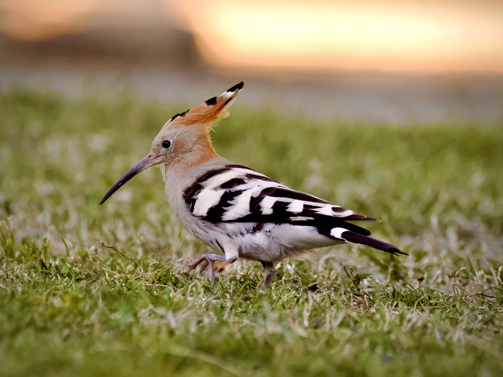
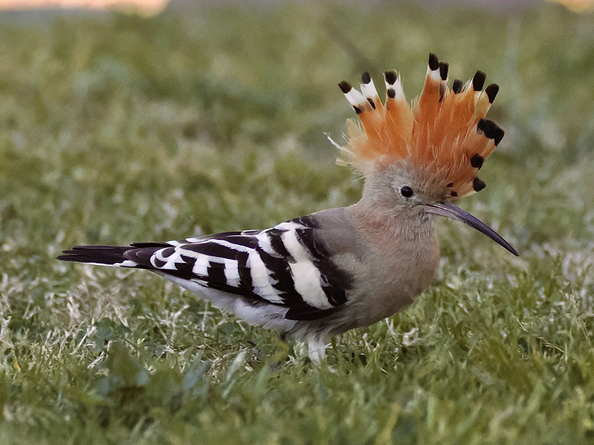
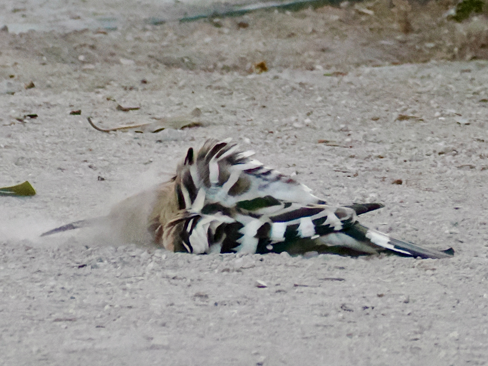
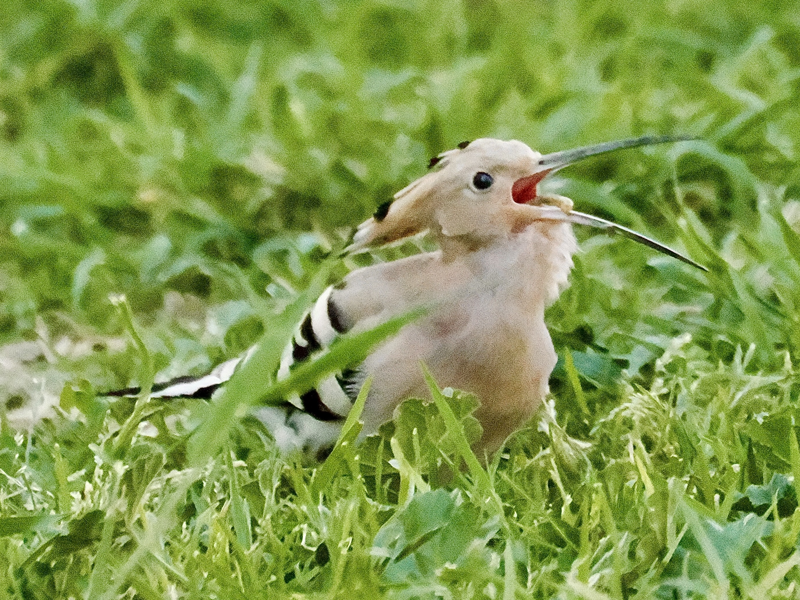
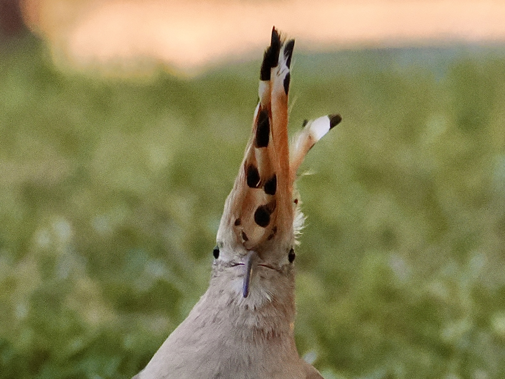

Common Hoopoe
Upupa epops

Unmistakable, odd-looking bird. Body light orange to pinkish, wings striped black and white. Flight is floppy like a butterfly.

Crest is fan-like, bright orange with a black tip. Raises crest when startled, and sometimes when landing.

Well, they love a good sand bath.

Often found foraging on the ground, probing the soil with their long beaks for insects.

And this is just funny.